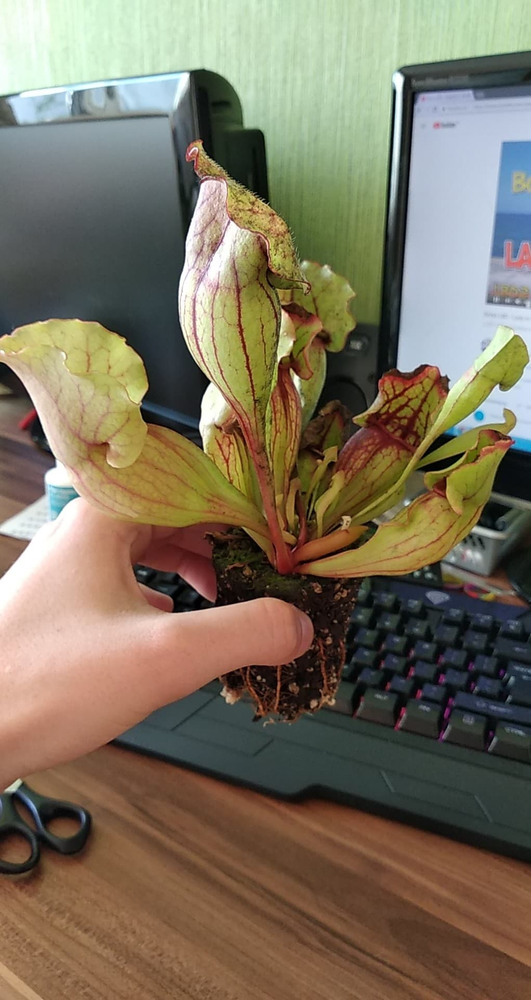
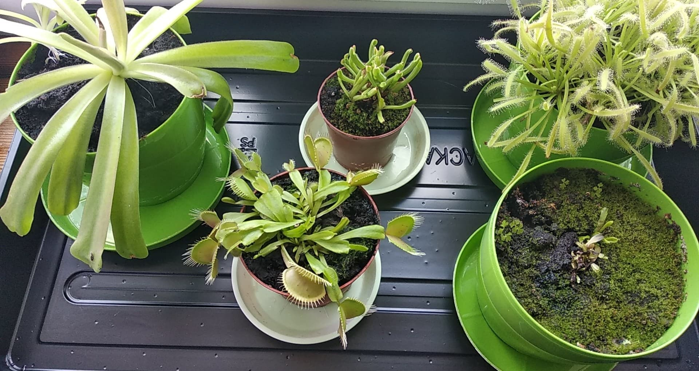
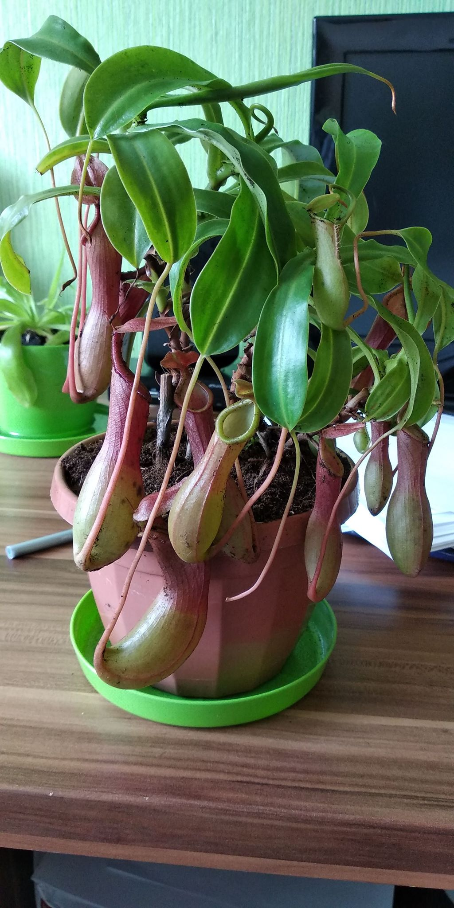
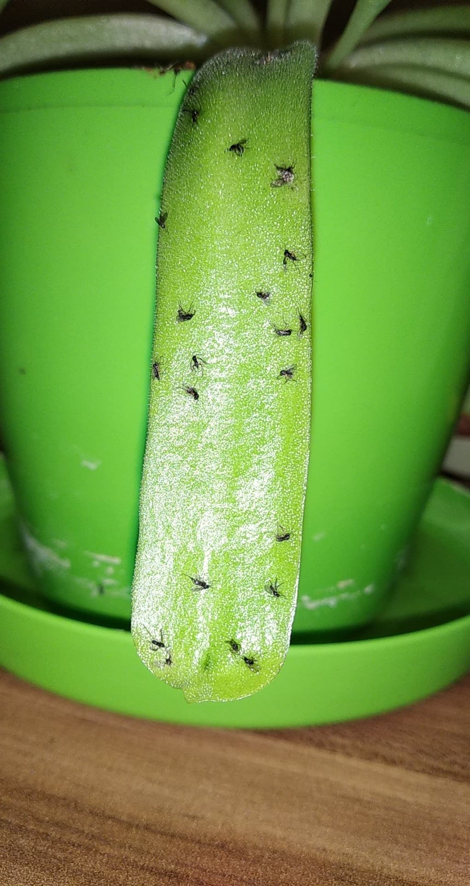

Kapturnice  Kapturnice potrzebują stalego poziomu nawodnienia. Panuje wiele przekonan jak nalezy je podlewac: przez podsiakanie (woda nalewana do podstawki) lub klasyczne podlewanie wprost do doniczki. Przez wiele lat prob doszedlem do wnioskow, że nie ma to znaczenia. Kapturnice doskonale "piją" wodę w jeden i drugi sposob. Należy tylko pamiętać, że kapturnice lubią mokre tereny, dlatego podloże stale musi być wilgotne ale nie do przesady. Zależnie od pory roku należy podlewać od 2 razy dziennie (w upalne lato) do 1-3 razy w tygodniu (w okres poza latem). Natomiast jest drobny wyjątek. Wiele odmian kapturnic przechodzi zimowanie. Jest to okres przepadający zazwyczaj od polowy listopada do lutego/marca/kwietnia. Należy wtedy zaprzestać częste podlewanie - wystarczy raz na kilka tygodni. Woda jaką możemy podlewać kapturnice powinna być wolna od kamienia i soli mineralnych. Najlepsza będzie do tego woda destylowania, deszczowka lub (jesli musimy) odstana woda z kranu. Mucholowki i rosiczki  Muchołowka w tym przypadku wymaga tego samego co kapturnica. Natomiast rosiczki należą do rodziny roślin lepkich zatem możemy podlewać je tylko i wylącznie przez podsiąkanie (woda do podstawki). Rosiczki bardzo dużo piją - w upalne lato zdarza sie, że trzeba je podlewać co kilka godzin. Zaniedbanie tego aspektu powoduje szybkie obumarcie naszego kochanego lepika. Dobrym pomyslem są automatyczne sposoby nawadniania z higrometrem wsadzonym w torf. Dzbaneczniki  Sposrod wyżej wymienionych, dzbaneczniki są na prawdę wytrzymale. Nie wymagają duzo wody natomiast torf powinien być stale wilgotny - nie mokry. Reszta zasad idealnie wpasowuje się w kapturnice z tym, że dzbaneczniki wolą wodę podawaną wprost do doniczki. Tlustosz  Tlustosz w zasadzie laczy zasady podlewania rosiczki i poniekad dzbanecznika. Tlustosz jest dosyć oszczędny w wode - jak dzbanecznik, natomiast jej brak spowoduje jego szybką śmierć. Tlustosza podlewamy do doniczki ze względu na lepkie liście i to, że nie lubi wody, ktora moglaby obmyć jego liście ze slodkiego, lepkiego nektaru.